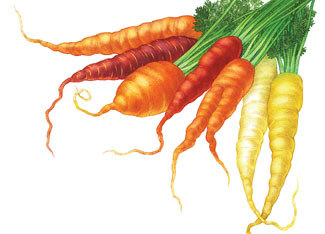
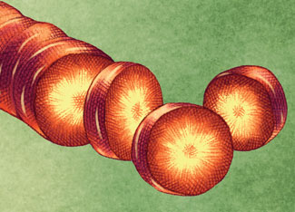

Nantes are fast and easy to grow, and adapt to a range of climates and soils.
Chantenay carrots develop stocky roots that become sweeter as the soil cools in the fall.
Miniature carrots have small, shallow roots that are often quite sweet. They’re good for heavy clay soil.
Imperator carrots are long and need deep, sandy soil to thrive.
Danvers carrots make great juice, and the sturdy roots store well, too.
For more details, see our chart with descriptions of each type, cultural tips and varieties.
In the spring, sow carrot seeds in fertile, well-worked soil about two weeks before your last frost date. In cool climates, continue planting every three weeks until midsummer.
In summer, begin sowing seeds for fall and winter carrots 10 to 12 weeks before your average first fall frost. (To find your frost dates, click here and search for “frost dates.”) Many gardeners plant carrots after their spring peas are finished.
Prepare the planting bed by loosening the soil to at least 12 inches deep. Thoroughly mix in a 1-inch layer of mature compost or a half-inch layer of vermicompost (carrots love what earthworms leave behind).
Sow your seeds about a quarter inch deep and 2 inches apart, in rows spaced at least 10 inches apart; carrots do well in double or triple rows. Thin seedlings to 4 to 6 inches apart, depending on the variety’s mature size.
Pull or dig spring-sown carrots when roots reach mature size and show rich color. Taste improves as carrots mature, but do not leave mature carrots in warm soil any longer than necessary (many critters like carrots). Summer-sown carrots that mature in cool fall soil can be left in the ground longer, but should be dug before the ground freezes to preserve their quality. Remove tops to prevent moisture loss, rinse clean, and store in a refrigerator or cold root cellar. Most varieties keep for several months in the fridge. Carrots also may be canned, pickled, dried or frozen.
Carrots are biennial and therefore won’t flower and make seed until their second year. In cold climates, open-pollinated carrots kept in cold storage through winter can be replanted in early spring for seed production purposes. When the seed clusters have ripened to brown, collect them in a paper bag. Then allow them to dry for another week indoors before crushing the clusters and gathering the seeds. Discard the smallest seeds. Store the largest seeds in a cool, dry place for up to three years.
Keep the soil moist for at least 10 consecutive days after sowing, because carrots take longer to germinate than other vegetables. To reduce surface evaporation during the germination period, cover newly seeded soil with boards or old blankets for five to six days. Check daily, and remove the covers as soon as the first seeds germinate. Seeds germinate best when soil temperatures range between 60 and 70 degrees Fahrenheit.
Reduce weed competition by sowing carrot seeds in shallow furrows filled with weed-free potting soil. Cover the ground between rows with newspapers topped by a mulch of grass clippings.
Sow carrots with a “nurse crop” of radishes. The fast-growing radishes will shelter tiny carrot seedlings while helping to suppress weeds.
Be stingy with nitrogen. Among fertilizers, carrots favor compost or vermicompost worked into the soil prior to planting; they respond to abundant phosphorous and potassium more than to high nitrogen levels. Carrots take up nutrients best in soil with a pH between 5.8 and 7.0. Use lime to raise the pH of acidic soil.
Harvest carefully. Before pulling carrots, use a digging fork to loosen the soil just outside the row.
Harvest small blossom clusters from overwintered plants to use as cut flowers. Thinning the blossoms helps the plants channel energy to the biggest seed-bearing umbels (flower clusters springing from the same point).
Max out the season. To eat carrots year round, grow fast-maturing vari-eties in spring, and make summer sowings for a season-stretching fall crop.
Use soaker hoses or drip irrigation lines to keep the soil constantly moist.
Cover the shoulders of all maturing carrots with mulch to keep them from turning green.
For more in-depth information about growing carrots, read Crunchy, Colorful Carrots.
Carrots will caramelize with their own sugars when braised in a little oil or grilled until tender. Grate raw carrots into muffins, cakes or pancakes to provide moisture and extra vitamin A. Use carrots generously to bring nutritious color to salads, stir-fries and soups. Try steamed carrots with fresh mint and a dab of honey or brown sugar. Orange and yellow carrots are great as nutritious raw snacks, but red carrots taste best cooked.
|
 KEITH WARD Carrot varieties vary greatly in color and shape. The different colors range from dark red to light yellow. |
 KEITH WARD When cooking carrots, simply grill until tender or chop up and add to soups and stir fries. |
|